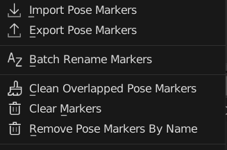
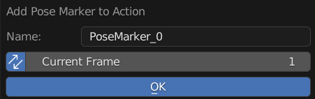
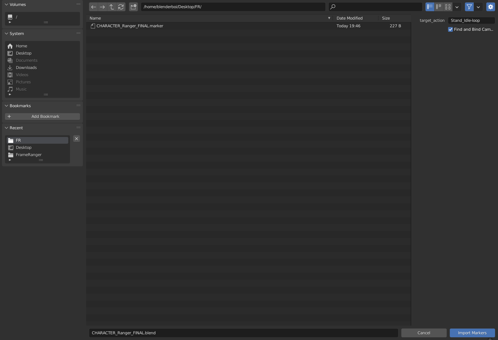
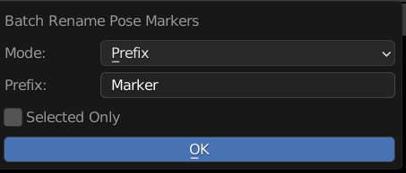
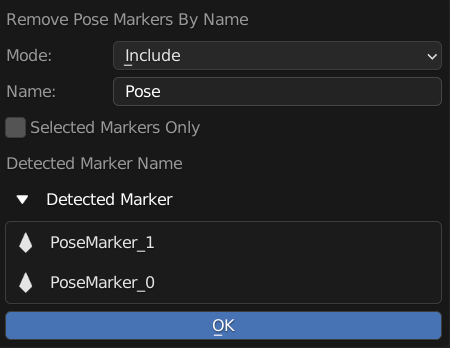

Menu Operators
Operators to Manage Object Action List
Add Pose Marker
Add New Pose Marker to this Action
Name: New Pose Marker Name
Sync: Also Update Current Frame Live
Frame: New Pose Marker Frame
Export & Import Pose Marker
Import Pose Marker to This Action
The File Exported is Actually a json File, but the Extension is .marker so that it will be easier to be identified
Note
Timeline Marker and Pose Marker Can be Imported or Exported Interchangebly
They are technically the same type of object
The only difference is pose marker is stored in Action and Timeline Marker is stored in scene
And Binding Pose Marker to Camera Doesn’t Seems to Have Any Uses Compare to Timeline Markers
Batch Rename Marker
Batch Rename All the Pose Markers of this action, Adding Prefix, Suffix, or Find and Replace
Mode: Method of Rename
Prefix: Prepend String A to the Start of the Name
Suffix: Append String A to the End of the Name
Find and Replace: Find String A and Replace with String Batch
String A (Prefix / Suffix / Find): Use for Prefix, Suffix, and Find
String B (Replace): Stirng to be Replaced
Selected Only: Only Rename Selected Markers
Clean Overlapped Pose Markers
Remove All Overlapping Duplicates of Pose Marker with Same Name And Frame
Clear Markers
Remove All Pose Markers From this Action
Remove Pose Markers By Name
Remove Pose Marker If there is a Match In Name
Mode: Method of Matching
Include: Check if the input string is in the pose marker name
Exclude: Check if the input string not in the pose marker name
Exact: Check if the input string is exactly equal to the pose marker name
Name: Input String For Find Matching Pose Marker
Selected Markers Only: Only Remove Selected Pose Marker
Detected Marker: Preview Of Markers that will be deleted